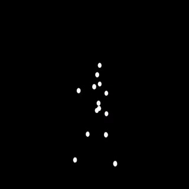

Pecha Kucha
Hello, world!
\[ X_{u, v} = s_u s_v ~ \sum_{x=0}^{N-1} \sum_{y=0}^{N-1} I(x, y) ~ cos \left[ \frac{\pi u (2x + 1)}{2N} \right] cos \left[ \frac{\pi v (2y + 1)}{2N} \right] \]
class Net(nn.Module):
def __init__(self):
super(Net, self).__init__()
self.conv1 = nn.Conv2d(1, 32, 3, 1)
self.conv2 = nn.Conv2d(32, 64, 3, 1)
self.dropout1 = nn.Dropout(0.25)
self.dropout2 = nn.Dropout(0.5)
self.fc1 = nn.Linear(9216, 128)
self.fc2 = nn.Linear(128, 10)
All code available here.